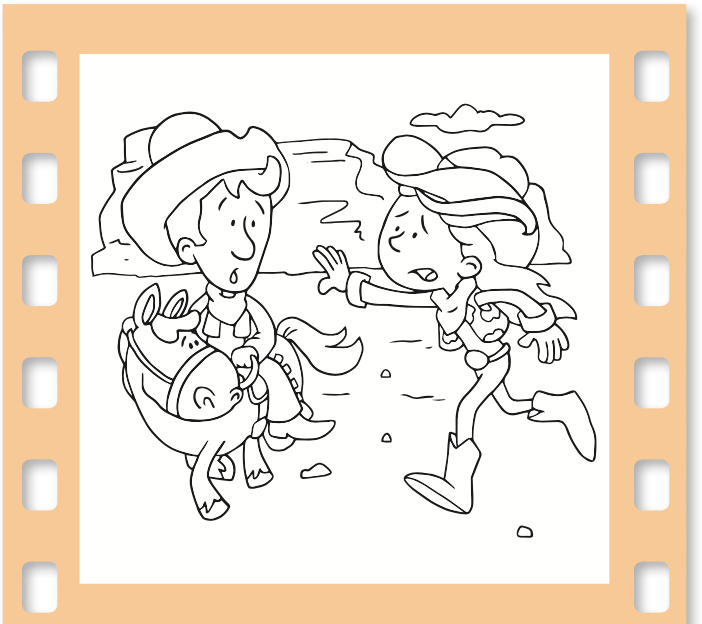
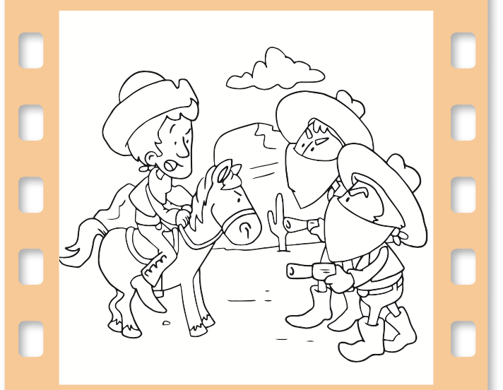
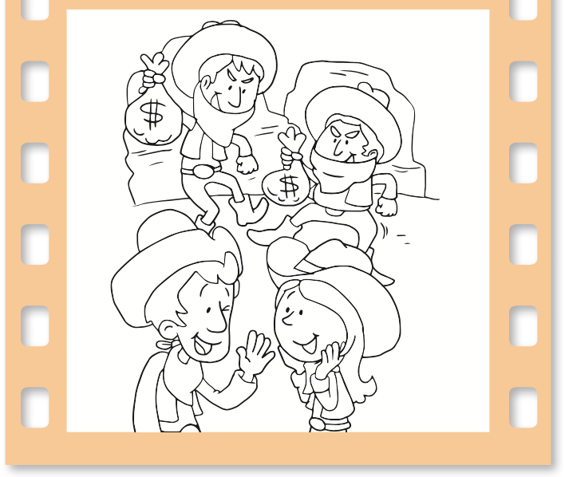

Uso los signos
¿Qué pasa si cambiamos los signos?
Escribe los signos
¿?
o
¡!
que faltan en los siguientes textos.

Un día, en el viejo Oeste:
—¡Juan
¡Sálvame, por favor!
—¡Queremos todo el dinero del banco

Qué quieren, ladrones
—¡No temas, Laura
Yo te salvaré.

Juan les entregó dos bolsas repletas.
—¡Ja, ja
Tenemos todo el dinero!
Somos ricos!
—No se dieron cuenta de que les di piedras —confesó Juan, riendo.